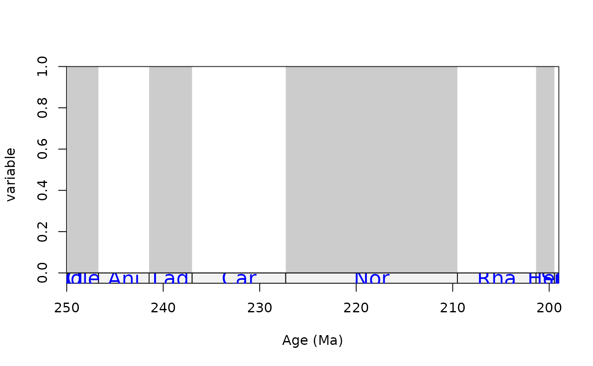
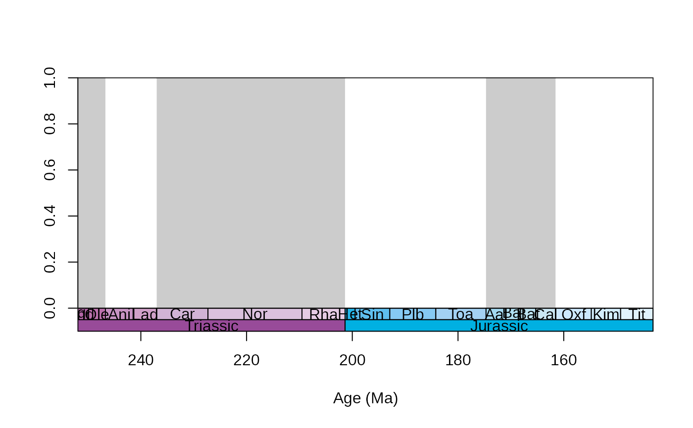
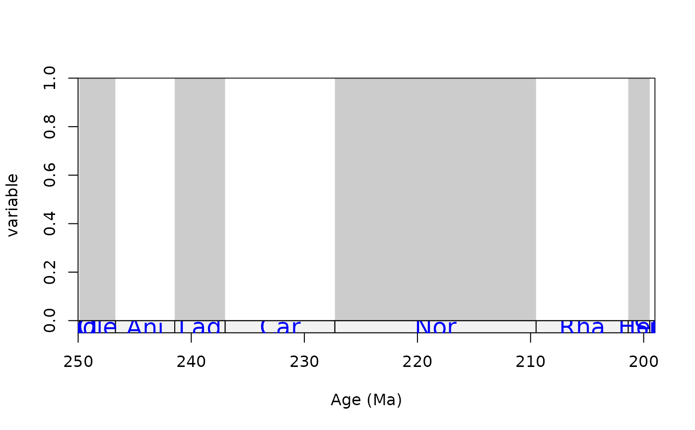
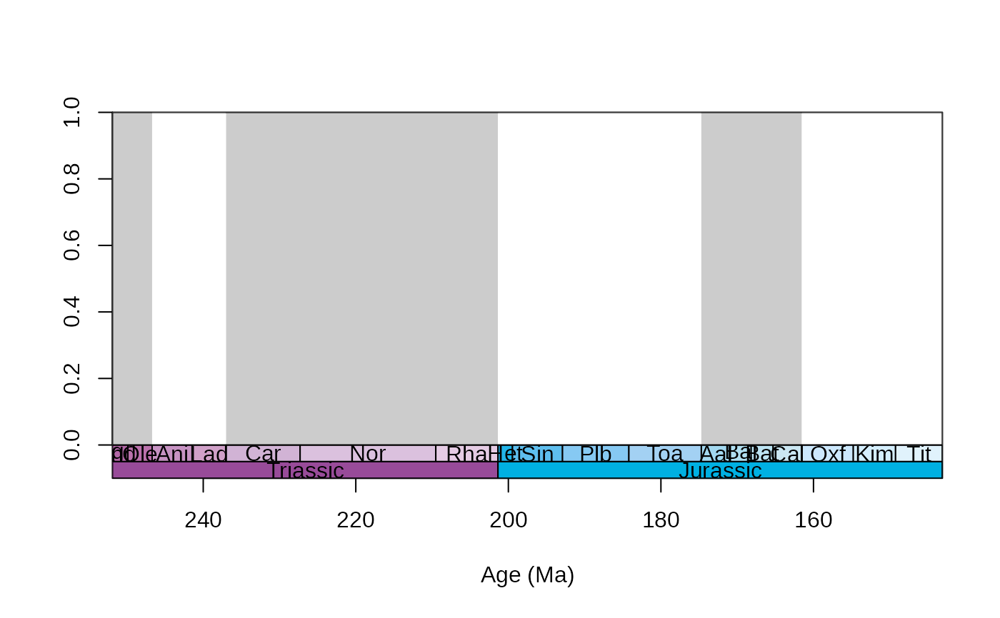

This function allows the user to quickly plot a time scale data table
Usage
tsplot(
tsdat,
ylim = c(0, 1),
xlim = NULL,
prop = 0.05,
gap = 0,
bottom = "bottom",
top = "top",
xlab = "Age (Ma)",
ylab = "",
boxes = NULL,
boxes.col = NULL,
shading = NULL,
shading.col = c("white", "gray80"),
plot.args = NULL,
boxes.args = NULL,
labels = TRUE,
labels.args = NULL,
lplab = TRUE,
rplab = TRUE
)Arguments
- tsdat
(data frame): The time scale data frame.- ylim
(numeric): The vertical extent of the plot, analogous to the same argument ofplot. By default it is set to the[0,1]interval.- xlim
(numeric): The horizontal extent of the plot, analogous to the same argument ofplot. By default it is set to plot the entire table. If a numeric vector with two values is supplied, it will be interpreted as the standardxlimargument and the plot will be displayed based on numerically constrained ages. If it is an integer vector with more than two values are plotted, the interval corresponding to the row indices of the table will be plotted.- prop
(numeric): Proportion of the vertical extent of the plot to display the the time scale at the bottom.- gap
(numeric): Proportion of the vertical extent of the plot that should be a gap betwen the time scale and the plot.- bottom
(character): Column name of the table for the variable that contains the older ages of intervals.- top
(character): Column name of the table for the variable that contains the earliest ages of intervals.- xlab
(character): The label of the time axis.- ylab
(character): The label of the data axis.- boxes
(character): Column name indicating the names that should be plotted as boxes of the timescale.- boxes.col
(character): Column name of the colour codes for the boxes. Each entry in this column has to correspond to an entry in theboxescolumn. It also overrides thecolentries in theboxes.argsargument.- shading
(character): Column name used for the shading. By default, no shading will be drawn (shading = NULL).- shading.col
(character): Colors that will be used for the shading, if shading is set. It is either a single column of thetsdatobject with color codes, or multiple color entries. The provided colors will be repeated as many times as necessary.- plot.args
(list): Arguments that will be passed to the mainplotfunction. Can be useful for the suppression of axes, font change etc.- boxes.args
(list): Arguments that will be passed to therectfunction that draws the rectangles of time intervals.- labels
(logical): Should the labels within the boxes be drawn? Setting this argumnet toFALSEwill not call thetextfunction that draws the labels.- labels.args
(list): Arguments that will be passed to thetextfunction that draws the labels. Can belists oflists if multiple series of ``boxes`` are used.- lplab
logical: When the left boundary of the plot does not match with any of the boundaries of the time scale boxes (andlabels=TRUE), should the label of the partially drawn box be plotted?- rplab
logical: When the right boundary of the plot does not match with any of the boundaries of the time scale boxes (andlabels=TRUE), should the label of the partially drawn box be plotted?
Details
As most analysis use an individually compiled time scale object, in order to ensure compatibility between the analyzed and plotted values, the time scale table used for the analysis could be plotted rather than a standardized table. Two example tables have been included in the package (stages and tens) that can serve as templates.
Examples
data(stages)
tsplot(stages, boxes="sys", shading="series")
# same with colours
tsplot(stages, boxes="sys", shading="series", boxes.col="systemCol")
 # only the Mesozoic, custom axes
tsplot(stages, boxes="system", shading="stage", xlim=52:81,
plot.args=list(axes=FALSE, main="Mesozoic"))
axis(1, at=seq(250, 75, -25), labels=seq(250, 75, -25))
axis(2)
# only the Triassic, use the supplied abbreviations
tsplot(stages, boxes="short", shading="stage", xlim=c(250,199),
ylab="variable", labels.args=list(cex=1.5, col="blue"),
boxes.args=list(col="gray95"))

# colourful plot with two levels of hierarchy
tsplot(stages, boxes=c("short", "system"), shading="series",
boxes.col=c("col", "systemCol"), xlim=c(52:69))

# only the Mesozoic, custom axes
tsplot(stages, boxes="system", shading="stage", xlim=52:81,
plot.args=list(axes=FALSE, main="Mesozoic"))
axis(1, at=seq(250, 75, -25), labels=seq(250, 75, -25))
axis(2)
# only the Triassic, use the supplied abbreviations
tsplot(stages, boxes="short", shading="stage", xlim=c(250,199),
ylab="variable", labels.args=list(cex=1.5, col="blue"),
boxes.args=list(col="gray95"))

# colourful plot with two levels of hierarchy
tsplot(stages, boxes=c("short", "system"), shading="series",
boxes.col=c("col", "systemCol"), xlim=c(52:69))
